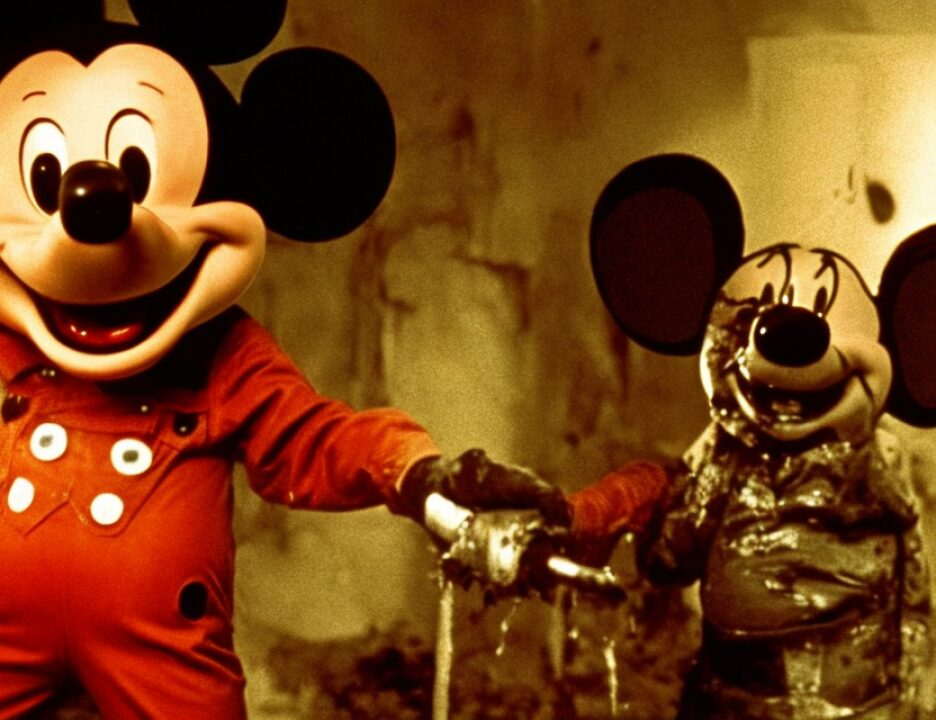

23 it. Mr. Ricco on recross. Mr. Fitzgerald just asked you
24 questions as to whether or not he expressed any concern that
25 Americans were killed. Isn't it a fact that Mohamed Odeh
5798
1 didn't make any distinction between Americans or Kenyans, he
2 was upset that the people were killed; isn't that right?
3 Answer, I don't know what he was thinking when he made that
4 statement. Made what statement? Question, made what
5 statement, that he was concerned that people were killed?
6 Answer, I truly believe, truly believe that he was concerned
7 that people were killed, innocent people were killed. So my
8 question was a simple question. He never made a distinction
9 to you that he was concerned because they were only Kenyans
10 and not Americans, did he? That was never said by him, was
11 it? No, he never specifically said that he broke it down, I'm
12 upset, Kenyans are killed and Americans are not.
13 That was his testimony, what the agent truly believed
14 he was saying. Now look at the argument that was made in
15 support of that. First it said, as that chart is in front of
16 you as it is now, you will not see in there once a statement
17 of remorse about the dead Americans. That's not bothering
18 Mr. Odeh. That was Mr. Karas's remarks. He went further. It
19 says he's not saying that he is unhappy about the Americans
20 who were killed, what he is telling the FBI, what he is
21 telling the FBI is that that was not the plan. But the FBI
22 doesn't have this diagram at the time. Just like I said, when
23 he gives the statement, the statement is partly true just as
24 it sits there, and the complete truth comes when you compare
25 the statement to this diagram.
5799
1 And the reason why this becomes important is because,
2 number one, to say that Mohamed Odeh was not concerned that
3 Americans die is a mischaracterization of his statement as
4 testified to by Agent Anticev. Two, to compare it to
5 information that he could not have had unless he was there
6 further distorts the evidence against Mr. Odeh. It is very
7 subtle, because what it means is this: If he is held in
8 communicado, then the only way he knows this information is if
9 what? He was a part of the plan. Right? If he was a part of
10 the plan. But the fact of the matter is, he could not have
11 known where the truck was left, whether or not somebody died
12 or not, from the plan. But if you believe that he was held in
13 communicado, it doesn't matter.
14 So the setup is complete for you to turn towards
15 Mr. Odeh, look at that diagram for whatever it's worth, even
16 if that is a 3 -- if that's a 3, then what's that and what's
17 this? -- and say gotcha. That's how it works. His testimony
18 was different than the argument that was advanced, but you
19 need it to change it to fit it together with the piece to make
20 it work.
21 Now let me say this. Mr. Odeh never said Harun's
22 house, 43 Runda Estates, right? If you go to his report, his
23 report says Harun's house. So Mr. Wilford misspoke a little
24 bit, and it becomes important. He don't know 43 Runda Estates
25 from 40 Runda Estates. But he knows Harun lives in Mombasa
5800
1 because he knows that he was affiliated with MIRA -- Nairobi.
2 Thank you, Mr. Wilford. People misspeak all over.
3 And it is important to note that the FBI did
4 determine that the PETN was microscopic, microscopic, and
5 that's very important. Here, too, the book and the bag,
6 contamination. It's the only reasonable and accurate
7 inference that can be drawn from the evidence in this case,
8 because there is no PETN anywhere else other than where Fahad
9 has been.
10 (Continued on next page)
11
12
13
14
15
16
17
18
19
20
21
22
23
24
25
5801
1 MR. RICCO: (Continuing) Now, there's been a lot of
2 talk in the case about what Bin Laden said, and Mr. Odeh is
3 charged by the government in the conspiracy with aiding and
4 abetting others.
5 Mr. Bin Laden has made some outrageous statements.
6 He's made statements that have influenced many. To ask a
7 young man to get in a truck with a thousand pounds of TNT
8 behind him is powerfully irresponsible, powerfully -- look at
1